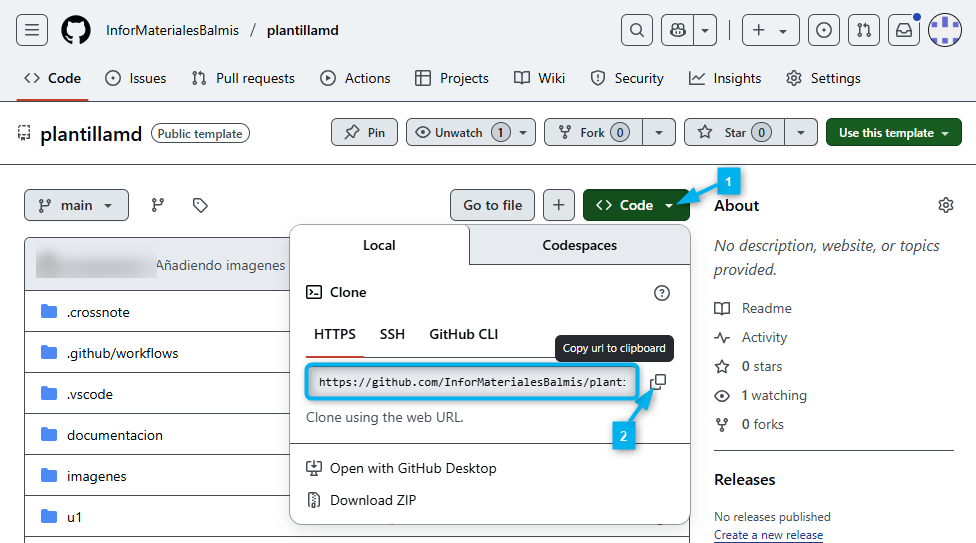
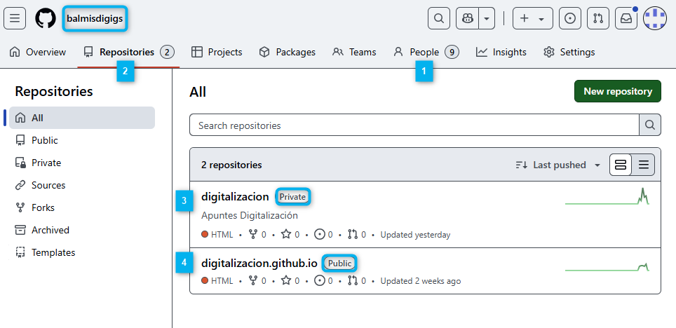
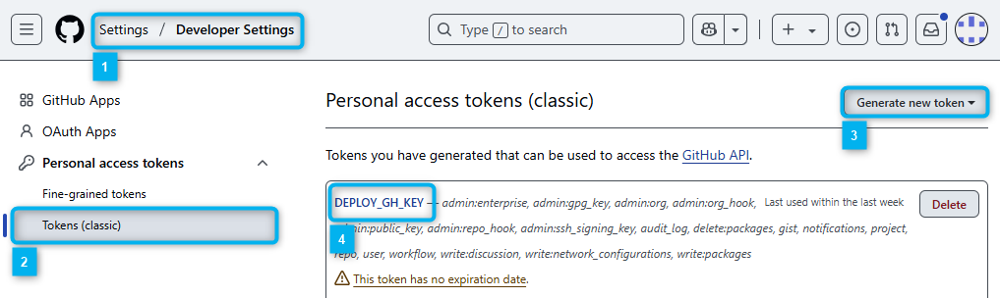
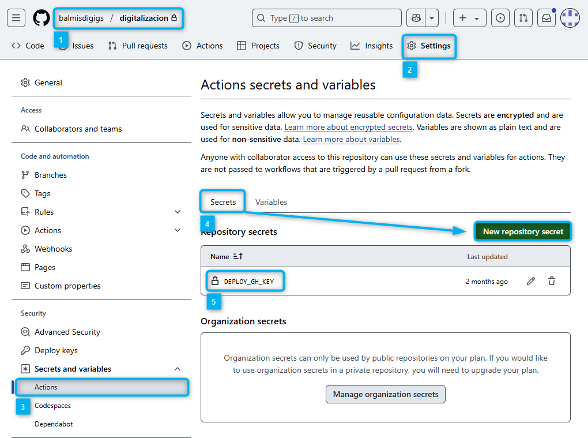

Manual para crear el marco de trabajo
ndice
Pre-Requisitos
-
Tener una cuenta de GitHub.
-
Tener instalado Google Chrome en el equipo.
-
Tener instalado Git en local. Si es la primera vez que trabajas con git, deberás configurar tu nombre y correo electrónico. Para ello, puedes usar el siguiente comando en la terminal de Windows o Git Bash:
C:\materiales> git config --global user.name "Nombre Apellido" C:\materiales> git config --global user.email "cuenta@iesdoctorbalmis.com" -
Tener el Java Runtime instalado mínimo la versión 17.
-
Tener instalado Visual Studio Code. Puedes descargar la versión portable ya preparada de GDrive en la carpeta del Departamento.
Si ya lo tienes instalado puedes crearte un perfil personalizado de "Apuntes con Markdown" con las siguientes extensiones:
- Spanish Language Pack for VSCode (para traducir el IDE al español)
- Code Spell Checker (para detectar corrección ortográfica y sintáctica en textos)
- Spanish - Code Spell Checker (paquete de idioma español para el corrector ortográfico)
- Open in browser (para abrir un archivo HTML en el navegador con botón derecho)
- Markdown All in One (para trabajar con archivos markdown)
- Markdown Preview Enhanced (para visualizar el archivo .md)
- markdownlint (para comprobar el contenido del archivo)
- PlauntUML (para mostrar colores en bloques de código de diagramas)
- Visual Studio Keymap (para usar los atajos de teclado de Visual Studio)
Esquema de carpetas tras la instalación
En la capeta [data] está la configuración local del usuario de VSCode, en la carpeta [extensions] están las extensiones instaladas y en la carpeta descritas en el punto anterior y en la carpeta [user-data] está la configuración global del usuario de VSCode como pueden ser los snippets, temas, configuraciones de usuario, etc.
En la carpeta [jar] está el ejecutable de PlantUML que markdown-preview-enhanced utiliza para renderizar los diagramas, ya está preconfigurado en la instalación portable, pero para funcionar necesitarás tener el JRE de Java instalado como se comentaba anteriormente.
Creación del Workspace
Se ha creado una cuenta de GitHub para el departamento de informática del IES Doctor Balmis, para gestionar los repositorios con materiales para los módulos de Digitalización y Sosténibilidad. La cuenta es infor.materiales@iesdoctorbalmis.com y la clave de acceso es la usar de forma tradicional en el departamento para administración.
Aviso
Esta cuenta es solo para labores administrativas y no se debe usar para trabajos personales. Por lo que para acceder o clonar los repositorios de trabajo hay que usar la cuenta personar de GitHub y si no se tiene acceso a alguna organización dependiente de esta cuenta. Podemos usar esta cuenta para añadirnos como colaboradores en la mismas.
Partir de la plantilla de trabajo que se ha creado para el departamento. Para ello, deberemos seguir los siguientes pasos:
-
En el siguiente repositorio público de GitHub, debes clonar el repositorio en tu equipo local. Pude que te pida autenticación de acceso a GitHub por lo que te aparecerá una autenticación inicial que te generará una credenciales de acceso desde tu equipo local. Para ello, puedes usar el siguiente comando en la terminal de Windows o Git Bash:
C:\materiales> git clone https://github.com/InforMaterialesBalmis/plantillamd.gitSi no sabes obtener la URL del repositorio para usarla con el comando
clone, puedes hacerlo desde el botónCode1️⃣ y al desplegar te aparecerá la URL que debes copiar con el botón deCopy to Clipboard2️⃣. Así para cualquier repositorio que quieras clonar.
-
Una vez clonado el repositorio, debes entrar en la carpeta
plantillaque habrá creado y borrar la carpeta.gitque se ha creado al clonar el repositorio. Para ello, puedes usar el siguiente comando en la terminal de Windows o Git Bash:C:\materiales> cd plantillamd C:\materiales\plantillamd> C:\materiales\plantillamd> del /s /q .git -
Usando la cuenta
infor.materiales@iesdoctorbalmis.comcreamos una nueva organización en GitHub. Para ello, desplegamos el menú de la derecha pulsando sobre el avatar y seleccionamosSettings1️⃣, en settings seleccionamosOrganizations2️⃣ y pulsamos sobre el botónNew organization3️⃣. En nuestros ejemplos, hemos creado la organización balmisdigigs 4️⃣, pero puedes poner un nombre identificativo de tu módulo como y nivel.


-
Una vez tenemos la organización creada accedemos a la misma a través de la pantalla anterior y lo primero que revisaremos es los colaboradores (
People1️⃣) que van a tener acceso a sus repos privados y los permisos que tendrán. Posteriormente, vamos a la pestaña deRepositories2️⃣ y pulsamos sobre el botón **New Repository**para crear un nuevo repositorio.- 3️⃣ Creamos un repositorio privado con un archivo
README.mdpara que así tenga un primer commit y llámalo con un nombre indicativo de tus materiales. En nuestro ejemplo le hemos llamadodigitalizacion. - 4️⃣ Creamos un repositorio público para el despliegue de nuestro contenido en GitHub Pages. En nuestro ejemplo le hemos llamado
digitalizacion.github.io.Nota: Posteriomente volveremos a él para configurar la publicación en GitHub Pages.

- 3️⃣ Creamos un repositorio privado con un archivo
-
Vamos a pasar los contenidos de la plantilla al repositorio que acabamos de crear, para ello volvemos a la carpeta
C:\materialesen el CMD y clonamos el repositorio privado que hemos creado en la organización seguimos los siguientes pasos que puedes ver en el ejemplo:-
Lo clonamos en la carpeta
C:\materiales.C:\materiales> git clone https://github.com/balmisdigigs/digitalizacion.git -
Entramos en la carpeta del repositorio clonado
digitalizacion, copiamos el contenido de laplantillamda la carpeta del repositorio clonado y por último borramos la carpetaplantillamdque hemos clonado inicialmente. Para ello, puedes usar los siguientes comandos en la terminal de Windows...C:\materiales> cd digitalizacion C:\materiales\digitalizacion> copy /s /q ..\plantillamd\* . C:\materiales\digitalizacion> del /s /q ..\plantillamd -
Hacemos un primer commit con el contenido de la plantilla y lo subimos a GitHub. Para ello, puedes usar los siguientes comandos en la terminal de Windows...
C:\materiales\digitalizacion> git add . C:\materiales\digitalizacion> git commit -m "Primer commit con la plantilla" C:\materiales\digitalizacion> git push -
Creamos una rama con nuestro nombre y la subimos a GitHub. Para ello, puedes usar los siguientes comandos en la terminal de Windows...
C:\materiales\digitalizacion> git branch profesorx C:\materiales\digitalizacion> git checkout profesorx C:\materiales\digitalizacion> git push -u origin profesorx
-
Configuración de la publicación
Configurar token para desplegar en Pages

-
1️⃣ Como hicimos al principio, saliendo de cualquier organización, vamos a la
configuración(Settings) de nuestra cuenta y vamos a la sección deDeveloper settingsque es la última del menú de la izquierda. -
2️⃣ En la sección de
Personal access tokenspulsamos sobre el botónTokens (classic). -
3️⃣ Pulsamos sobre el botón
Generate new tokeny rellenamos los siguientes campos:-
Note: Nombre del token, por ejemploDEPLOY_GH_KEY(Deploy GitHub Key). -
Expiration: Seleccionamos No expiration para que no caduque nunca. -
Select scopes: Marcamos las siguientes opciones:- repo (Full control of private repositories)
- workflow (Update GitHub Action workflow files)
Nada más generarlo, lo copiaremos y lo guardaremos en un lugar seguro, ya que no podremos volver a verlo. Si lo perdemos tendremos que borrar el token y crear uno nuevo.
-
-
4️⃣ Tras crearlo y copiarlo nos aparecerá en la lista de tokens creados con el nombre que le dimos.
Configurar el secreto a usar em Action para desplegar en Pages

- 1️⃣ Volvemos a la organización y el repositorio privado (
digitalizacionen el ejemplo) que hemos creado para nuestros materiales. - 2️⃣ Vamos a la pestaña de
Settingsdel repositorio. - 3️⃣ En el menú de la izquierda, en la sección de
Secrets and variablespulsamos sobreActions. - 4️⃣ Vamos a la pstaña
Secretsy pulsamos sobre el botónNew repository secret. - 5️⃣ Rellenamos los siguientes campos:
Name: Nombre del secreto, por ejemploDEPLOY_GH_KEY(Deploy GitHub Key).Secret: Pegamos el token que hemos copiado anteriormente y que generamos en el punto anterior.
Tras guardarlo no deberá aparecer en la lista de secretos creados con el nombre que le dimos.
Configurando las acciones en GitHub Pages
Si abrimos la carpeta con nuestro workspace digitalizacion, en VSCode, veremos la estructura de carpetas y archivos del esquema. En ella, está resaltada la carpeta .github/workflows/. En ella definiremos el fichero YAML con las acciones (Actions) de despliegue a ser tenidos en cuenta por GitHub. Nosotros, en el caso de la plantilla, ya está creado el fichero publicar_web_action.yml y cuyo contenido será reemplazado por el siguiente:
name: Publicar web en GitHub Pages
# Al hacerse Push en master
on:
push:
branches: [ main ]
jobs:
publica:
runs-on: ubuntu-latest
steps:
# Checks-out your repository under $GITHUB_WORKSPACE, so your job can access it
- uses: actions/checkout@v4
- name: Crea carpeta a publicar en www
# DEBO ELIMINAR CON rm AQUELLAS CARPETAS QUE NO QUIERO PUBLICAR !!!
run: |
rsync -av --prune-empty-dirs --include-from=rsync_files.txt ./ www/
rm -Rv www/.crossnote
- name: Despliego www en el repo donde tengo github pages
uses: peaceiris/actions-gh-pages@v3
with:
personal_token: ${{ secrets.DEPLOY_GH_KEY }}
external_repository: ORGANIZACION/REPOPUBLICO.github.io
publish_branch: main
publish_dir: ./www
allow_empty_commit: true
Deberá reemplazar el valor de external_repository por el nombre de la organización y el nombre del repositorio público que hemos creado para publicar los materiales. En nuestros ejemplos sería balmisdigigs/digitalizacion.github.io.
Decidiendo que archivos publicar
Fíjate que el comando que se ejecuta en el paso Crea carpeta a publicar en www es el siguiente:
run: |
rsync -av --prune-empty-dirs --include-from=rsync_files.txt ./ www/
rm -Rv www/.crossnote
En el sincronizamos en la carpeta de publicación www los archivos que queremos publicar en el repositorio público. Para ello, se usa el comando rsync que es un comando de sincronización de archivos y carpetas entre dos ubicaciones y solo copiamos aquellas extensiones que nos interesan definidas en el archivo rsync_files.txt que se encuentra en la raíz del repositorio.
+ */
+ *.html
+ *.pdf
+ *.png
+ *.jpeg
+ *.jpg
+ *_ejemplo.zip
+ *_recurso.zip
+ *.svg
- *
Donde si lo abres, puedes ver como se muestra en el esquema anterior que solo se copian los archivos que tienen las extensiones que hemos definido y el resto se eliminan. Muy importante no poner extensiones tipo *.md o *.zip que no forman parte de contenido o assets de una página web. Pues serán visibles por cualquiera al ser un repositorio público.
Peligro
Además, fíjate que al final de la cadena hemos añadido un rm -Rv www/.crossnote indicamos que eliminamos la carpeta .crossnote ya que contiene un archivo *.html y por tanto es publicada. Si quisiéramos eliminar otras carpetas con archivos a publicar las tendríamos que añadir aquí. Por ejemplo, supongamos que tenemos una carpeta examenes y otra bibliografia con archivos *.pdf y no queremos que se publiquen, deberíamos añadir las líneas de borrado de las carpetas al final del comando rsync como sigue:
run: |
rsync -av --prune-empty-dirs --include-from=rsync_files.txt ./ www/
rm -Rv www/.crossnote
rm -Rv www/examenes
rm -Rv www/bibliografia
Activando GitHub Pages

- 1️⃣ Para nuestro ejemplo, vamos al repositorio público de despliegue (
digitalizacion.github.ioen el ejemplo) que hemos creado para nuestros materiales en la organizaciónbalmisdigigs. - 2️⃣ Vamos a la pestaña de
Settingsdel repositorio. - 3️⃣ En el menú de la izquierda, en la sección de
Pagesseleccionamos la ramamainy la carpeta/(root)y pulsamos sobre el botónSave. - 4️⃣ Tras cada commit en la rama
mainde nuestro repositorio privado, se ejecutará la acción de despliegue y se publicará en elmainrepositorio público. Desencadenando a su vez la acción de GitHub Pages y publicando el contenido en la URLhttps://balmisdigigs.github.io/digitalizacion.github.io/como puedes ver en el recuadro. Donde además aparece un botón denominadoVisit site. Apúntate esta URL como marcador para que no se te olvide.
Workflow de Trabajo
Trabajo normal en nuestra rama
En ocasiones queremos solo trabajar en nuestra rama y hacer un push a la misma para cambiar de equipo de trabajo o sincronizarnos con el resto de trabajo que hubiese en main. Para ello, podemos usar el siguiente workflow de trabajo:
-
Hacemos un
commiten nuestra rama de trabajo (NUESTRA_RAMA).C:\materiales\digitalizacion> git add . C:\materiales\digitalizacion> git commit -m "Descripción del commit" -
Actualizamos main y lo fusionamos en nuestra rama de trabajo (
NUESTRA_RAMA).C:\materiales\digitalizacion> git checkout main C:\materiales\digitalizacion> git pull C:\materiales\digitalizacion> git checkout NUESTRA_RAMA C:\materiales\digitalizacion> git merge main -
Hacemos un
pusha nuestra rama de trabajo (NUESTRA_RAMA) en GitHub.C:\materiales\digitalizacion> git push
Publicar en main y desplegar en GitHub Pages
El proceso se puede puede realizar de muchas formas, pero se puede resumir en los siguientes pasos:
-
Hacemos un
commiten nuestra rama de trabajo (NUESTRA_RAMA).C:\materiales\digitalizacion> git add . C:\materiales\digitalizacion> git commit -m "Descripción del commit" -
Vamos a la rama
mainy hacemos unpullpara actualizarla con los cambios que se hayan podido realizar en el repositorio remoto. Posteriormente, hacemos unmergede nuestra rama de trabajo (NUESTRA_RAMA) en la ramamainy lo subimos al repositorio remoto. Este último paso puede producirnos algún tipo de conflicto que deberemos resolver si alguien ha modificado el mismo archivo que nosotros. En ese caso, deberemos resolver el conflicto y hacer un nuevocommit.C:\materiales\digitalizacion> git checkout main C:\materiales\digitalizacion> git pull C:\materiales\digitalizacion> git merge NUESTRA_RAMA C:\materiales\digitalizacion> git push -
Volvemos a nuestra rama de trabajo (
NUESTRA_RAMA) y hacemos unmergede la ramamainen nuestra rama de trabajo y lo subimos al repositorio remoto.C:\materiales\digitalizacion> git checkout NUESTRA_RAMA C:\materiales\digitalizacion> git merge main C:\materiales\digitalizacion> git push
Si prefieres puedes crear este worklfow de publicación en un fichero .cmd dentro de la carpeta ..vscode de tu workspace. En nuestro ejemplo lo hemos llamado despliegue.cmd. Para ejecutarlo puedes arrastrar el fichero a un terminal abierto en VSCode (Ctrl + ñ) que esté situado en la raíz del workspace. El contenido del fichero es el siguiente:
rem Partimos de NUESTRA_RAMA con el commit realizado
git checkout main
git pull
git merge NUESTRA_RAMA
git push
git checkout NUESTRA_RAMA
git merge main
git push
rem Acabamos en nuestra rama si todo ha ido bien